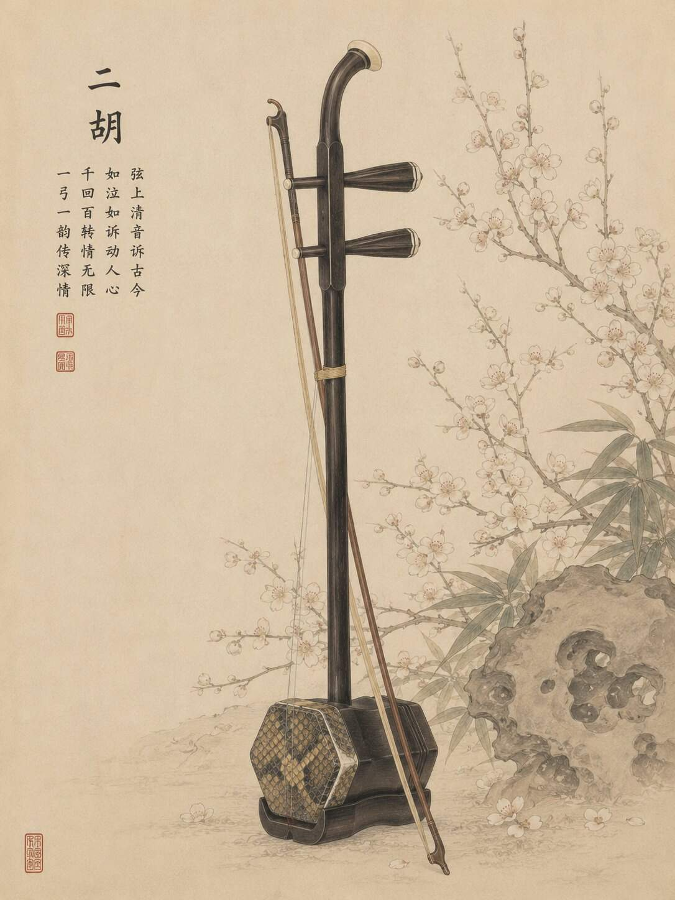
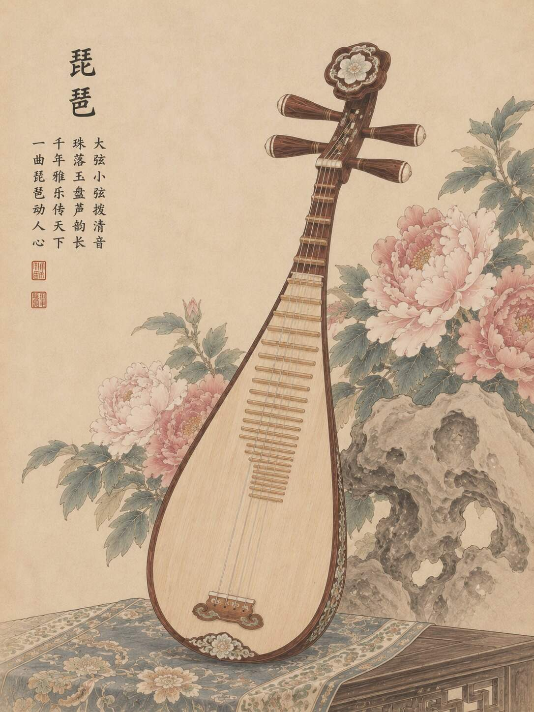
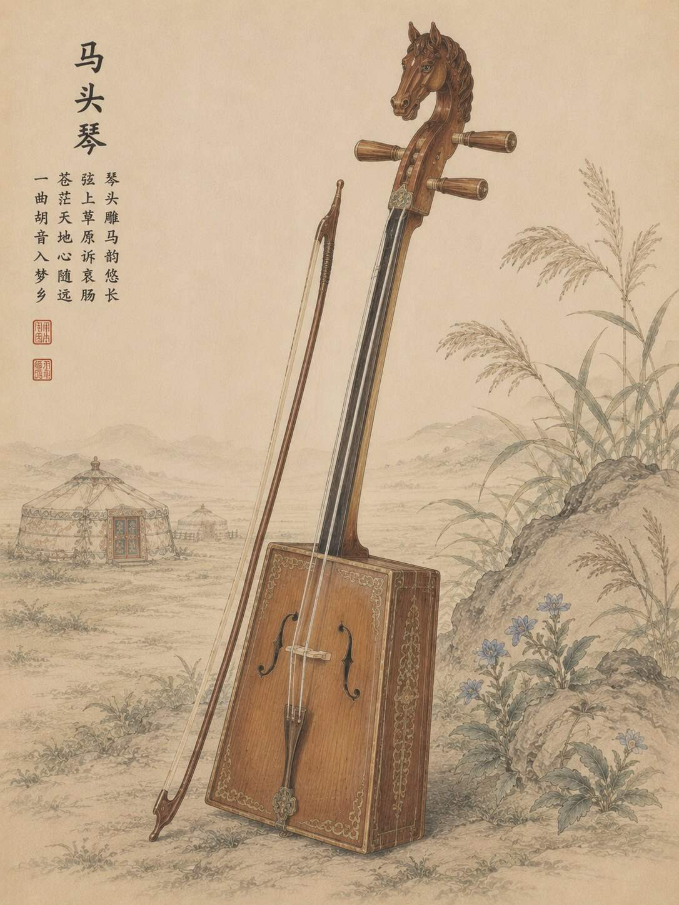
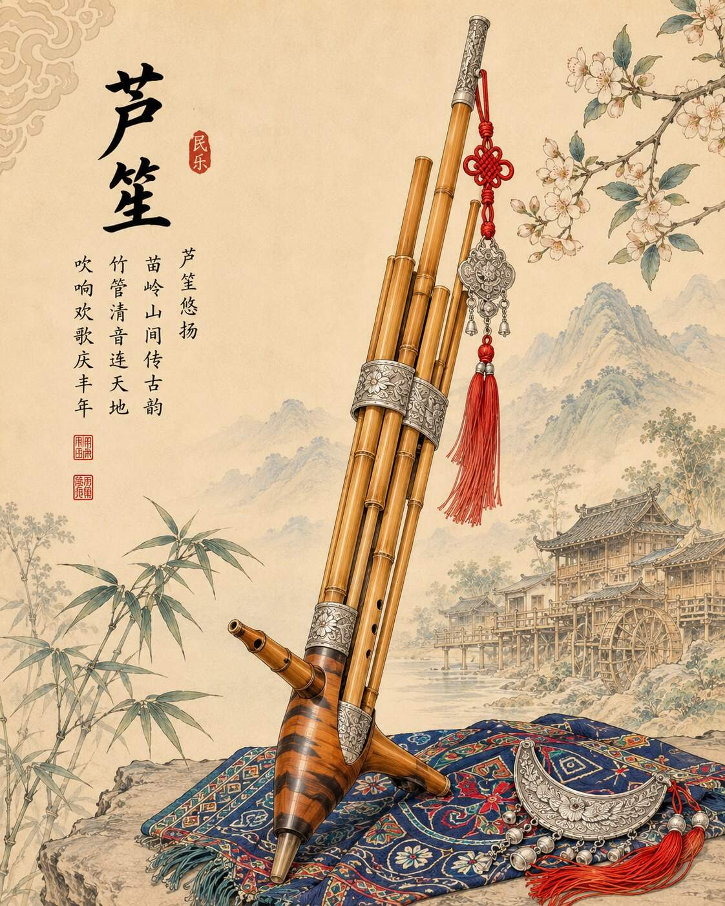
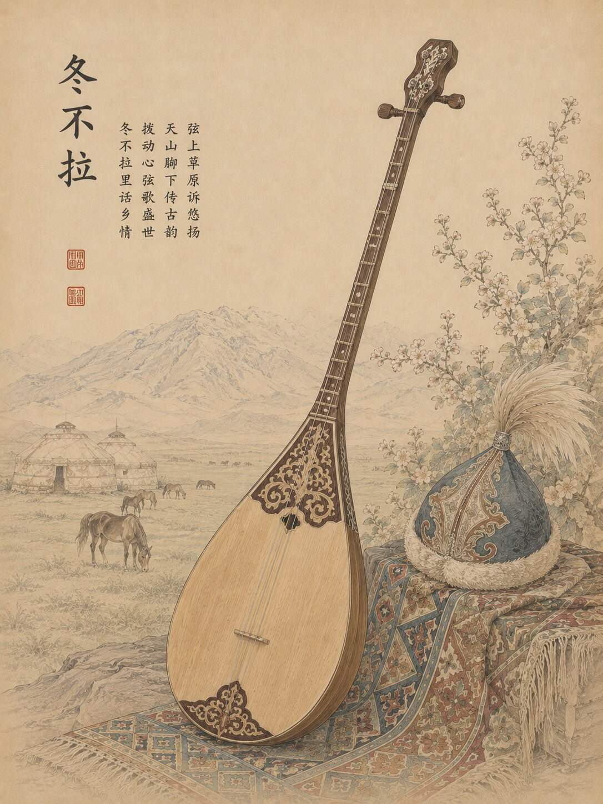

溯源 · 时光留声
暗调复古光影聚焦二胡琴箱、琵琶木纹与芦笙竹管。琴弦微颤、竹管进气，淡金粒子和极简声波提示古乐从历史中苏醒。
在中国广袤的土地上，二胡、琵琶、马头琴、芦笙、冬不拉等众多民族器乐承载着地域风土与历史记忆。本卷以声音可视化重构听觉空间，让无形的乐声成为可见的流动韵律。
顶部 30 秒全屏短片不是“宣传片插入”，而是整卷声音叙事的起点。镜头从古朴器物的发声瞬间出发，跟随声纹跨越地域，最终汇聚成中华大地的声音轮廓。
暗调复古光影聚焦二胡琴箱、琵琶木纹与芦笙竹管。琴弦微颤、竹管进气，淡金粒子和极简声波提示古乐从历史中苏醒。
声音轨迹穿越中原、江南、北疆、西南与西域；青、赭、棕三色声纹跨越山海，实现“声随山河走，乐随地域流”。
地域实景逐渐虚化为民族文化符号与声音线条，多种音色交织汇聚，最终形成中华大地轮廓和全屏动态声场。
声波放缓、粒子沉降，古今画面叠影，乐器虚影淡入背景。余音归于平和，留下恒定微光，象征文脉不息。
将鼠标停留在乐器章节上，专属声波开始呼吸。声纹随器乐气质而动，形成“温润 / 清丽 / 辽阔 / 空灵 / 热烈”五种可感的情绪空间。

二胡是汉族最具代表性的拉弦民族乐器之一，扎根中原并流传全国。其历史可追溯至唐宋奚琴，形制简约却表现力极强；无品无格的细腻弦音既能演绎市井烟火的温婉，也能诉说家国岁月的苍凉。它跨越地域、融入多种乐种，是中华音乐文化延续性与普适性的典型载体。

琵琶是中华古典弹拨乐的重要代表，始于秦汉、兴于唐宋。轮指细密如细雨，扫弦铿锵如惊雷，兼具婉约与豪迈。从宫廷雅乐、文人曲赋到民间小曲和当代民族乐团，琵琶持续见证传统乐文化在地域之间流动，也保存着华夏雅乐绵延不绝的审美内核。

马头琴是蒙古族标志性传统器乐，根植于北方游牧文明。低沉雄浑、悠远空灵的音色自带长风过草原的纵深感。千百年来，它伴随逐水草而居的生活，记录迁徙、牧歌与精神信仰，并与中原及西域器乐遥相呼应，完成中华音乐南北之间的声音对话。

芦笙是西南古老的簧管吹奏乐器，广泛流传于苗、侗、瑶、水等多个民族。从祭祀到节庆，从生产生活到群体歌舞，它既是人与自然沟通的声音媒介，也是多个民族共享的文化符号。清亮通透、和声饱满的音色，为中华音乐“多元一体”提供了鲜明的西南声部。

冬不拉是哈萨克族、柯尔克孜族等西域游牧民族的重要弹拨乐器。形制简约、演奏灵动，音色明亮清脆、节奏轻快，可独奏抒怀，也可合奏欢庆。它扎根边疆游牧文化，同时不断与中原和北方草原音乐交流互通，让东西地域的声音在同一文化版图中彼此回应。
中原的细弦、江南的弹拨、草原的长音、西南的簧管与西域的明亮节奏并不被抹平成同一种声音。它们保持差异，却在长期流动与交流中形成兼容并蓄的共同音乐文化。